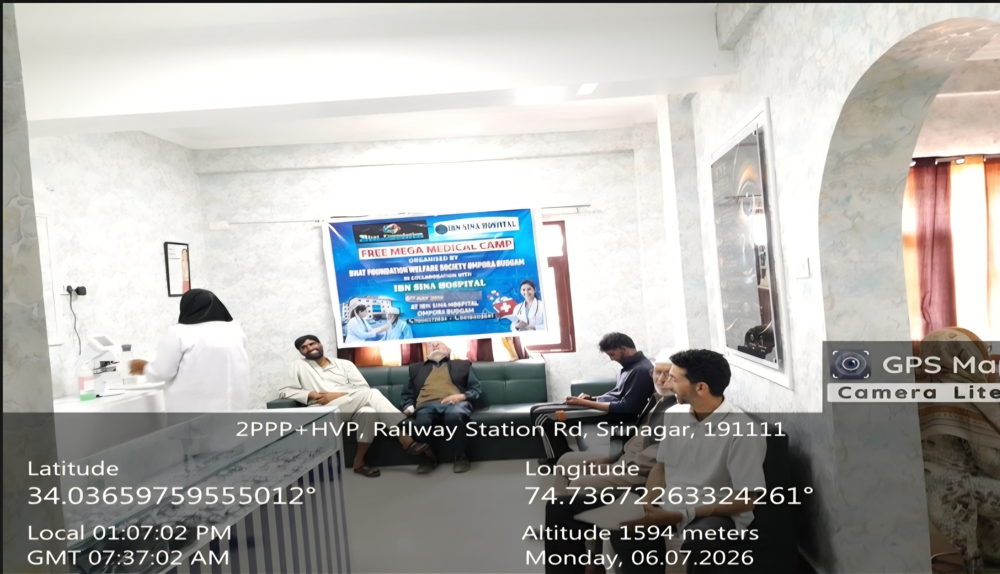
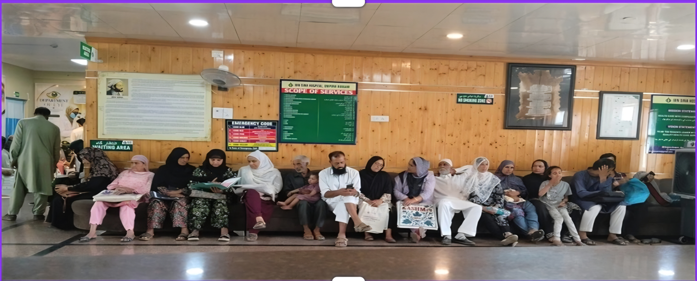
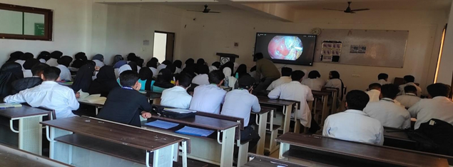
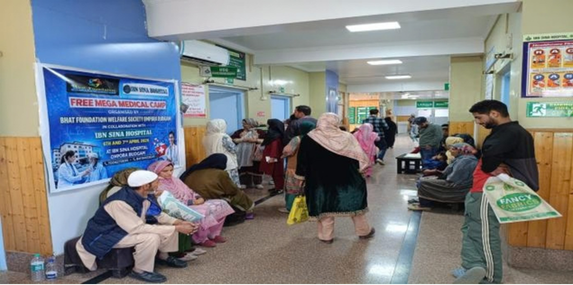

Women Empowerment Programme
Awareness, skill development and livelihood-oriented support for women.
From free medical camps to student orientation programmes and drug awareness campaigns, our work is carried out at the grassroots level with the participation of volunteers, professionals and community members.
Healthcare
Bhat Foundation Welfare Society regularly organizes Free Medical Camps for underserved and economically weaker communities with the objective of improving access to basic healthcare services and promoting health awareness among the general public.
The medical camps are conducted in collaboration with healthcare professionals, volunteers, and local community members to provide free medical check-ups, consultations, health screenings, and guidance on preventive healthcare practices.
Through these camps, the organization aims to support individuals who have limited access to quality healthcare facilities, especially in rural and vulnerable areas. Special attention is given to senior citizens, women, children, and economically weaker families.

Healthcare
The organization regularly conducts Healthcare Awareness Programs in Ompora Budgam and surrounding areas of Jammu & Kashmir with the objective of promoting health education, preventive healthcare practices, and community well-being among underserved populations.
Awareness is spread on important health-related issues such as personal hygiene, sanitation, nutrition, communicable diseases, mental health, maternal and child healthcare, and the importance of regular medical check-ups.
Sessions are conducted with the support of healthcare professionals, social workers, volunteers, and community leaders. Special focus is given to women, children, senior citizens, and economically weaker families.

Education & Youth
Bhat Foundation Welfare Society organizes Live Orientation Programs for students with the aim of promoting educational awareness, career guidance, personality development, and motivational learning among youth.
The orientation sessions are conducted with the support of educators, professionals, healthcare experts, and community mentors who guide students on important topics such as career planning, higher education opportunities, personal development, skill enhancement, and social awareness.
Through interactive discussions and live demonstrations, the programmes help students gain practical exposure, improve communication skills, and develop a positive approach towards education and future career goals.

Social Awareness
Bhat Foundation Welfare Society actively organizes Drug Awareness Camps in Ompora Budgam and nearby areas of Jammu & Kashmir to spread awareness about the harmful effects of drug abuse and substance addiction among youth and the general public.
Through these awareness programmes, the NGO aims to educate people about the physical, mental, social, and economic consequences of substance abuse while promoting healthy and positive lifestyles.
The camps include awareness sessions, motivational talks, community discussions, counseling support, and interactive programmes conducted with the participation of social workers, healthcare professionals, volunteers, educators, and community leaders. Special emphasis is given to guiding youth towards education, skill development, sports, and constructive social activities.

Community Welfare
Bhat Foundation Welfare Society actively conducts various Social Welfare and Community Support Activities for the benefit of underprivileged, vulnerable, and economically weaker communities across Ompora Budgam and other areas of Jammu & Kashmir.
The organization continuously works towards supporting individuals and families in need through humanitarian assistance, awareness programmes, relief support activities, community outreach initiatives, and welfare services aimed at improving the overall well-being of society.
Special attention is given to vulnerable groups including women, children, senior citizens, and financially weaker families. The organization also collaborates with local volunteers, community leaders, and stakeholders to ensure effective implementation of welfare activities.

Other Initiatives
Awareness, skill development and livelihood-oriented support for women.
Practical skill-building that supports self-reliance and employability.
Community plantation drives for a greener, healthier environment.
Community cultural activities that bring people together.
General social awareness initiatives for community well-being.
Awareness on safe water practices and community sanitation.
Educational assistance and support activities for students.
Humanitarian assistance for individuals and families in need.
Reach out to us to learn how you can contribute to our programmes and initiatives.